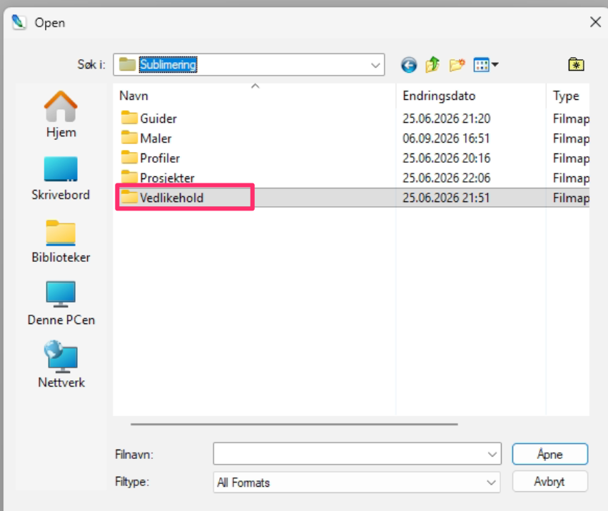
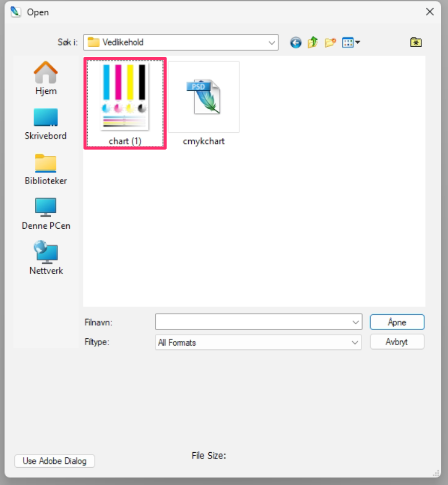
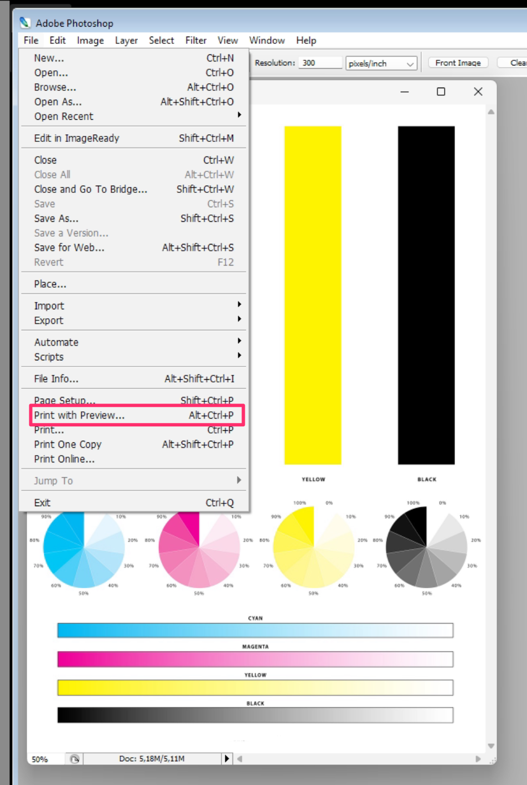
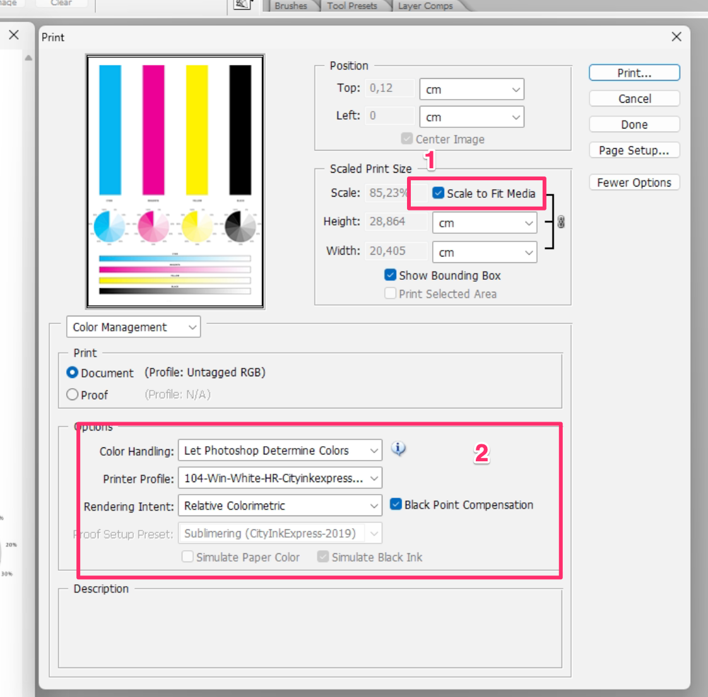
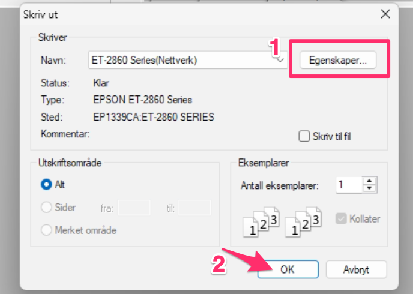
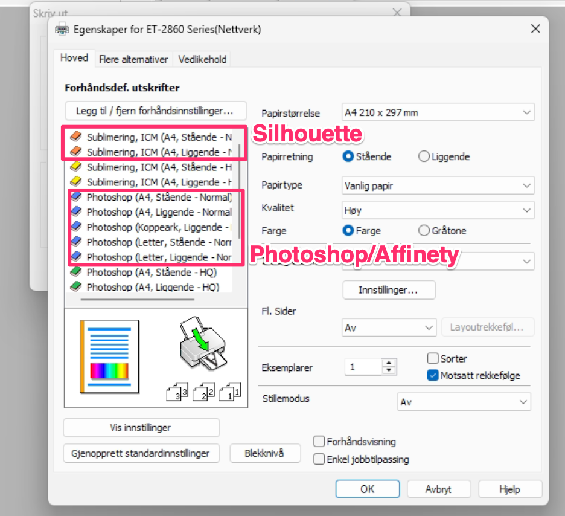
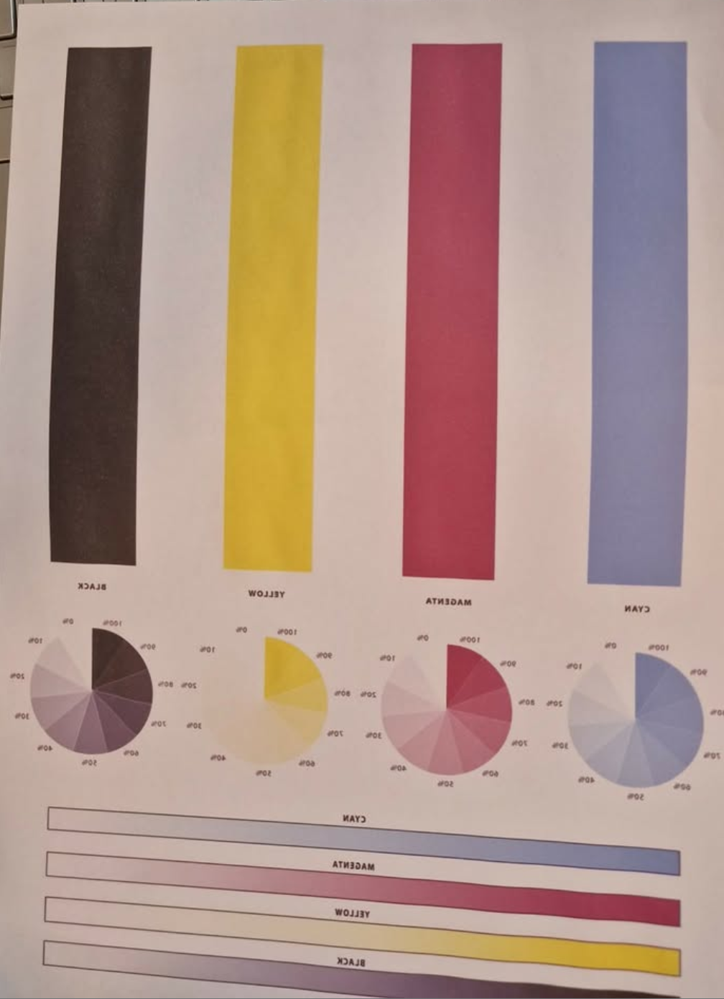

2. Vedlikeholdsrutiner
Rutiner og tidsbruk
- Daglig: ca. 5 minutter før du starter en kundeordre.
- Ukentlig: ca. 10 minutter når alt fungerer som normalt.
- Månedlig: 30–60 minutter, avhengig av hva skriveren trenger.
- Kvartalsvis eller ved behov: kontroll av teflon, slitasje og andre vedlikeholdsdeler.
Daglig rutine før du begynner å printe
1. Pass på at skriveren ALLTID står PÅ!
Den skal aldri skrus av. Dersom du opplever strømbrudd, skal den skrus på igjen så raskt som mulig, og deretter kjøre en full vedlikeholdsrutine
2. Sjekk blekknivåene på blekktanken.
Se gjennom vinduet på blekktanken for å sjekke blekknivå. Husk å fylle på før det går tomt, og helst ikke la blekket synke under nederste nivåstrek. Hvis tanken går under dette eller går tom, kommer det luft inn i slangene, og det vil du absolutt ikke. Så pass på å sjekke dette hver gang du printer, slik at du får fylt opp FØR den når nederste målestrek.
3. Kjør alltid en dysesjekk før du starter på kundeordre.
Se 3. Dysesjekk – slik leser du den for hvordan du analyserer resultatet av denne, og hva du evt bør gjøre for å vedlikeholde den før du starter med noe printing.
4. Tørk av varmepressen (når den er kald) med en fuktig klut.
Fjern evt blekkrester, papirfibre eller annet støv. Husk også å dekke til pressebunnen med litt papir i bunnen. Her anbefaler vi f.eks tegnepapir på rull fra ikea.no. Legg dette nederst på pressebunnen, før du legger på den blanke artikkelen + sublimeringspapiret med printet motiv + nytt lag med tegnepapir + teflonark øverst før du gjennomfører noe sublimering.
5. Dobbeltsjekk ALLTID print-settings for dokumentet du ønsker å printe, slik at du får sjekket at både fargeprofil og utskriftsprofil står riktig innstilt FØR du printer. * Dersom du printer uten riktige print-settings og fargeprofiler vil fargene bli feil, og over tid så kan du risikere at dysene kan tette seg fordi printeren ikke står innstilt med riktig blekkåpning for sublimeringsblekket slik den skal.
💡 NB: Ekstra tips er å gå over alle tekstilvarer med en lo-rulle før du forpresser og sublimerer, for å fjerne smuss, støv og fukt som usynlig kan være i plagget.
Viktig forhåndsregel
NB: Ikke print kundeordre hvis dysesjekken viser manglende linjer. Løs problemet først, så slipper du å sløse blanks og bruke blekk på feilprint, og du forebygger at problemet med dysesjekken kan bli permanent.
Dersom du er usikker, så send oss gjerne en melding så vi kan hjelpe deg videre ❤️
Ukentlig
- Gjenta steg 1-3 i den daglige vedlikeholdsrutinen
- Print 3-5 eksemplarer av testbildet med alle fire farger (CMYK-chart).
- Dette holder alle fargekanaler aktive og holder blekket i bevegelse, selv om du ikke har hatt noen ordre den uken
- Denne bevegelsen av blekket er også viktig for å sørge for at det ikke koagulerer eller levrer seg inne i slangene
- Tørk av utsiden av skriveren med en tørr, lofri klut
- Sjekk papirmaterområdet for støv og papirrester.
- Støv som havner på papiret under printing ødelegger printen
Print av vedlikeholdsprint (CMYK-CHART)
CMYK-Chart (cyan, magenta, gul og sort) trekker like mye blekk fra hver av dysene. Vi anbefaler da å printe 3-5 eksemplarer om gangen for å få en større bevegelse av blekk gjennom systemet.
Dette dokumentet finner du inne i "Sublimering" mappen vi satte opp for deg under oppstartsveiledningen, inne i undermappen som heter "Vedlikehold".
På Windows






Når alt går etter planen, skal den da se slik ut, slik at den er tett og fin i fargene, og ingen hvite striper i utskiften.

På Mac:
Kommer senere
Månedlig - sett av 30–60 minutter
- Gjenta stegene fra både daglig og ukentlige rutiner
- Slå av printeren og trekk ut strømledningen.
- La skriveren kjøle seg ned helt før du åpner front-dekselet.
- Og husk: Ikke åpne front-dekselet for mye, da dette kan skade ledninger og veibaner inne i printeren, og hold lokket oppe av en liten skrutrekker. Er du usikker på hvordan du gjør dette, så kan du se denne videoen: INSERT VIDEO
- Rengjør capping-stasjonen (der skrivehodet hviler når skriveren er av).
- Bruk bomullspinner fuktet med destillert vann. Denne gummipakningen samler blekkrester som kan overføres tilbake til dysene
- Tørk forsiktig av wiper-bladet (det lille gummibladet som tørker skrivehodet).
- NB: Ikke press for hardt
- Inspiser blekkflaskene.
- Se etter bunnfall eller separering. Rull flaskene forsiktig for å blande (ikke rist, det lager luftbobler).
- Sjekk kjøpsdato, slik at du sikrer at blekket ikke er foreldet før du vurderer å fylle det på printeren. Er du usikker på dette, så send oss en melding, så sjekker vi for deg.
- Sjekk at varmepressen viser riktig temperatur.
- Bruk evt et IR-termometer og sammenlign med displayet. Et avvik på 5–10°C er vanlig på eldre presser
EKSTRA TIPS
Sjekk avfallsblekktanken/blekkputen fysisk ved å åpne dekselet!
-
En full tank stopper skriveren, og vil da informere deg om at den trenger service.
-
Men noen ganger kan selve blekkputen være full selv før den gir deg beskjed. Så det kan være lurt å sjekke dette, slik at du er forberedt. For å gjøre det, så sjekk ut denne lille videoen, som viser deg hvor blekkputen sitter, og hvordan du tar den ut: INSERT VIDEO
-
NB: Ha alltid en reserve tilgjengelig, og kontakt oss for å avtale time for å resette telleren inne i printeren. Da setter vi inn en egen reset-kode.
Hvert kvartal / ved behov
- Gjenta stegene fra både daglig, ukentlige og månedlige rutiner
- Bytt Teflon-ark hvis de har brennmerker, hull eller misfarging fra sublimeringsblekk
- NB: Gamle rester av sublimeringsblekk på teflonarket kan smitte over på neste sublimeringsprosjekt
Når skriveren skal stå ubrukt i mer enn 1 uke – ferietid
Før du lar skriveren stå:
- Gjenta stegene fra både daglig, ukentlige og månedlige rutiner
- Gjennomfør evt hoderens, trykkrens og vedlikeholdsprint etter behov ut fra analyse av dysekontroll. Følg stegene videre ved å lese her: 4. Hoderens og trykkrens – steg for steg
- La skriveren stå påslått (ikke trekk ut strømmen). Ved at printeren står PÅ hele tiden, går den bare i dvale, og dette holder dysene fuktige mens du er borte. Men husk å ta full vedlikeholdsrutine igjen med en gang du kommer hjem.
VIKTIG Å HUSKE!
- Aldri trekk ut strømmen på skriveren, selv også når den ikke er i bruk.
Etter du kommer hjem:
- Når du kommer tilbake så gjør du samme prosedyren en gang til, og starter igjen på punkt 1 og jobber deg gjennom stegene fra både daglig, ukentlige og månedlige rutiner.
- Dersom det fortsatt er avvik etter du har gjort alle disse stegene, så ville jeg anbefalt deg å ta kontakt for å bestille en rask gjennomgang for å sjekke status. Send oss da en melding, så finner vi et ledig tidspunkt i kalenderen ❤️